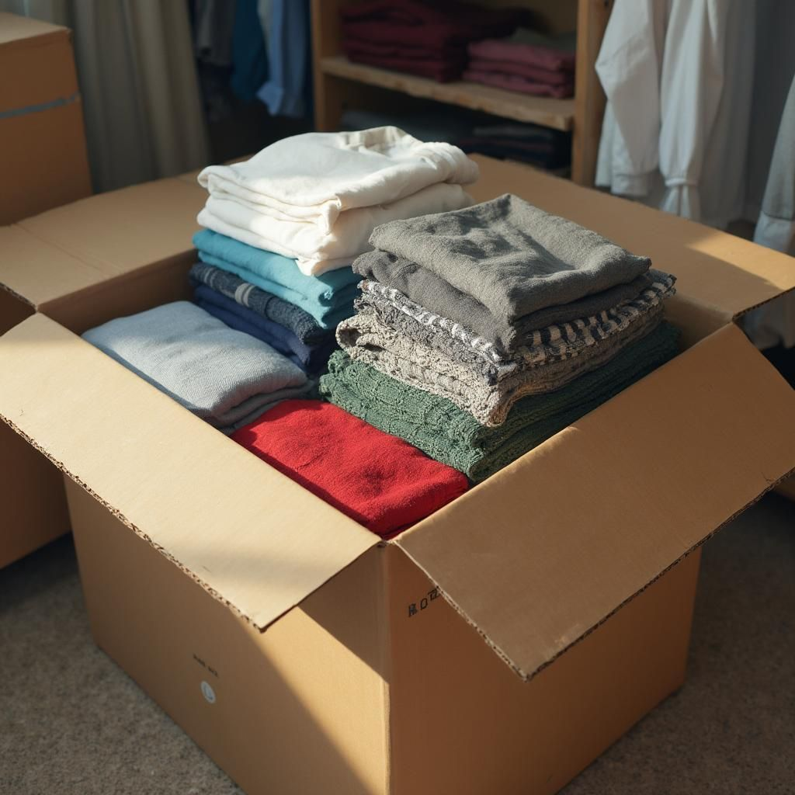
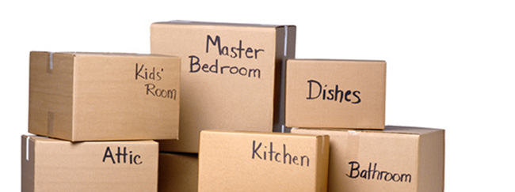
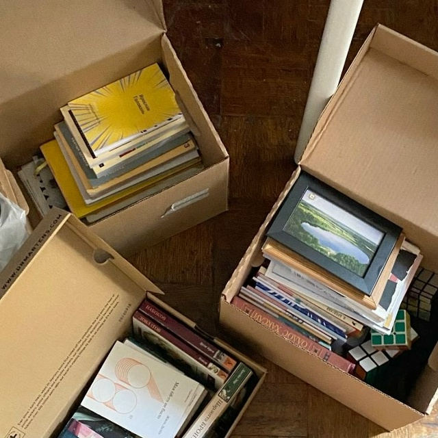
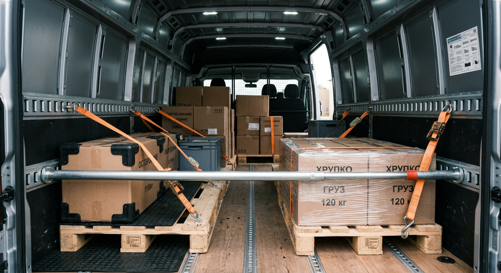

Переезд без стресса: как перевезти гардероб, технику, книги и мебель
Переезд из одной квартиры в другую или в новый город кажется хаосом только до тех пор, пока у вас нет четкого плана действий. Разберем подробно по шагам, как правильно подготовиться к отправке, чтобы все домашние вещи доехали целыми, а вы сохранили время и спокойствие.
1. Предварительная сортировка вещей

Начинайте подготовку за две-три недели до назначенной даты. Пройдите по всем комнатам и разделите имущество на три категории: берем с собой, отдаем на благотворительность или продаем, утилизируем. Чем меньше объем и вес груза, тем проще пройдет погрузка и разгрузка на новом месте. Одежду, которую вы не надевали больше года, старые журналы и неисправные бытовые приборы разумно оставить в прошлом. Такой подход позволяет не перевозить лишние килограммы пыли и сразу освободить пространство в новой квартире для комфортной жизни.
2. Выбор коробок и понятная маркировка

Выбирайте плотные гофрокоробки из трехслойного или пятислойного картона разных габаритов: компактные ящики подойдут для тяжелых книг и кухонной утвари, а крупные короба — для легких объемных вещей вроде одеял, подушек и зимних курток. Перегруженную коробку трудно нести, а ее дно может не выдержать нагрузки, поэтому всегда заклеивайте швы широким скотчем крест-накрест. Каждую коробку обязательно подписывайте маркером с боковой стороны и сверху: указывайте комнату назначения и краткий перечень содержимого. Коробку с вещами первой необходимости (документы, зарядные устройства, аптечка, базовый набор посуды и сменная одежда) выделите яркой лентой и загружайте в машину в самую последнюю очередь.
3. Бережная упаковка книг и гардероба

Домашнюю библиотеку укладывайте в небольшие коробки горизонтальными стопками или корешками вниз, чтобы переплеты не деформировались при тряске. Свободные зазоры между стопками плотно заполняйте упаковочной бумагой или полотенцами. Деловые костюмы, платья и пальто на плечиках удобнее всего перевозить в специальных высоких гардеробных коробах с перекладиной: ткань не помнется в дороге и не потребует долгого отпаривания. Повседневный трикотаж и постельное белье можно сложить в вакуумные пакеты, что сократит занимаемый объем почти вдвое и надежно защитит текстиль от влаги и дорожной пыли.
4. Бытовая техника, посуда и мебель

Телевизоры, мониторы и компьютеры лучше всего перевозить в заводских коробках с пенопластовыми вставками. Если оригинальная тара не сохранилась, защитите экран листом плотного картона и оберните корпус в несколько слоев воздушно-пузырчатой пленки. Холодильник и стиральную машину разморозьте и просушите за сутки до выезда, а барабан зафиксируйте транспортировочными болтами. Стеклянные тарелки ставьте в коробку строго на ребро, прокладывая каждую слоем плотной бумаги и мягкой ткани. Крупные шкафы, столы и кровати разберите на щиты, фасады стяните стрейч-пленкой, а выступающие углы закройте картонными накладками. Всю мелкую фурнитуру, ручки и винты сложите в плотный зип-пакет, подпишите и приклейте скотчем к внутренней стенке соответствующей мебели. В кузове фургона тяжелые предметы размещают вдоль переднего борта и надежно стягивают ремнями.